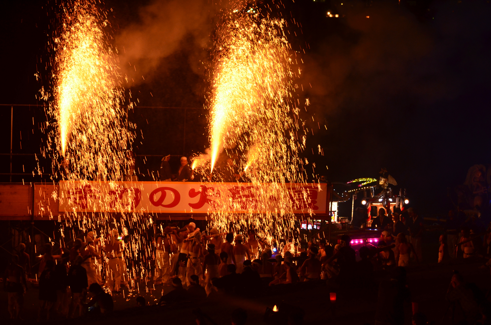
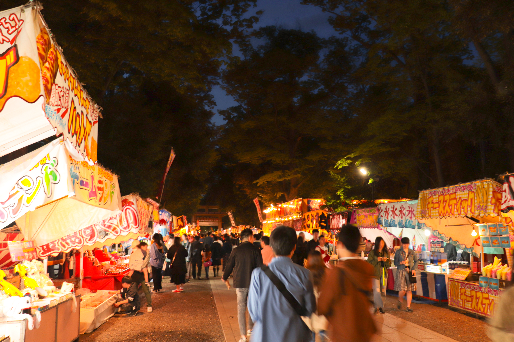

岐阜を代表する春の伝統行事「手力の火祭」
300年以上受け継がれる、岐阜の炎の神事

岐阜市・手力雄神社で300年以上受け継がれてきた「手力の火祭」は、春の訪れを告げる岐阜を代表する伝統行事です。祭りの夜、境内には無数のかがり火が灯り、太鼓の音が響き渡る中、滝のように降り注ぐ火花が夜空を赤く染め上げます。
火薬を仕込んだ神輿が火柱を上げながら進む姿は圧巻で、観客のすぐそばを通り抜けるたびに熱気と迫力が肌で感じられます。炎と音が織りなす壮大な光景は、古くから地域の人々に受け継がれてきた祈りと力強さを象徴しています。
手力の火祭は、ただ見るだけでなく、祭りの空気そのものを体感できる特別な行事です。岐阜の春を彩るこの伝統の祭りは、訪れる人々に忘れられない体験を与えてくれます。

手力の火祭が行われる夜、境内周辺には多くの屋台が立ち並び、祭りの熱気をさらに高めます。
焼きそばやたこ焼き、香ばしい匂いが漂う串焼き、甘い香りのベビーカステラなど、昔ながらの味を楽しめる屋台がずらりと並び、家族連れや観光客で大いに賑わいます。
祭りの太鼓の音や、火の粉が舞う迫力ある光景とともに、屋台の明かりや人々の笑い声が重なり、春の夜ならではの温かい雰囲気が広がります。
手力の火祭を訪れた人々が、炎の迫力だけでなく、屋台の活気や味わいも楽しめるのが、この祭りの魅力のひとつです。